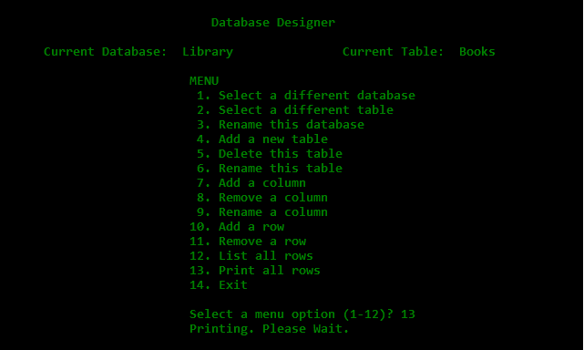
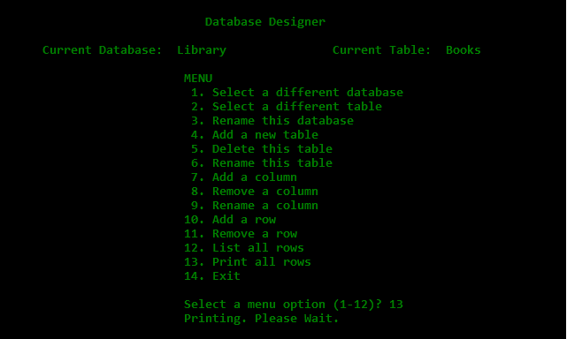

- Title: Universal Multipurpose Database Designer
- Date: Jan-May 1983.
- Language: Research Machines BASIC.
- Project: High School Graduation, Computer Science.
Although I say so myself, somewhat ahead of its time (see this article, although not entirely relational by today's popular understanding of the term.
It is widely believed that the term relational database refers to the relationships between tables (entity relationships). Technically speaking, however, it refers to the fact that each datum in a row within the table are related: a concept known as a record. My database design program had tables, and therefore records, but it had no concept of entity relationships. It did support multiple tables within a single database. Ted Codd's pioneering relational work was more than a decade into its evolution, but his concepts were not widely understood.
My original program has long since been lost. Even it they hadn't I would have no 380Z on which to run it. Here I've approximated a few screens using a DOS batch file. Memory is a funny, thing, so I don't guarantee it matches the original, but at least it gives an idea
Best, Dave
 
